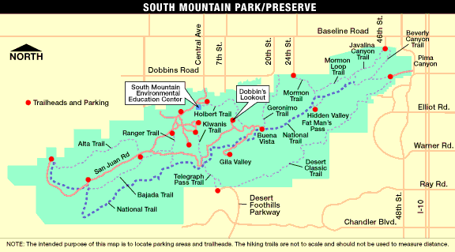

17 filmed trials of ants carrying foam-mounted dime
Segments spanning $145~s$ extracted from each video
Ant positions and load trajectory tracked using ImageJ and Mtrack

OBSERVATIONS
Ants switched among three states: $$S:=\{F(\text{Front}), B(\text{Back}), D(\text{Detached}) \}$$
Back ants lift with force $F_l = 2.65 ~\text{mN}$ measured with load cell
Back ants attach to left of vertical orange line.
Front ants attach to right of vertical orange line.
Two Detached ants at top and bottom.
Load moves right.
OBSERVATIONS
Load trajectory nearly straight segment
Behavioral Transitions
CRN with 6 reactions $S_i \underset{r_{ij}}{\stackrel{r_{ji}}{\rightleftharpoons}} S_j$
$S_i \neq S_j$ are states from $S:=\{F,B,D\}$
SHS : Behavioral Model
Behavioral components = ant counts in each state
$$\mathbf{N}_S := \begin{bmatrix} N_F & N_B & N_D \end{bmatrix}^T$$
6 Transitions $S_i \rightarrow S_{j}$
Intensity : $r_{ij} N_i$
Reset Map: $(N_i,N_j) \mapsto (N_i-1,N_j+1)$
Dynamical Model
Each front ant pulls with force $F_p$, and each attached ant lifts with force $F_l$.
$$\begin{align} F_{up} &=& (N_F+N_B)F_l \\ F_n &=& m_L g -F_{up} \end{align}$$
Proportional regulation
Load position and velocity $x_L, v_L$
Each front ant pulls with force $ F_{p} = K (v_L^D - v_L) $
When $r_0$ is very large, $r(t) \approx r(0)$, and we approximate the CRN by
\begin{align}
U \xrightarrow {p_b e_u r_0} B \\
B \xrightarrow {p_u e_b r_0} U
\end{align}
with time constant $\tau = \frac{1}{r_0(p_b e_u + p_u e_b)}$.
Correction for Spatial Effects
Partitioning of space between robots.
The four spaces between each pair of robots have been
partitioned into smaller spaces no larger than $\delta_{\text{max}}
= 1 + 2a$, which represents the maximum additional arc length that a
bound robot can interfere with due to spatial effects. Here $a$ is the avoidance distance between robots.
Correction for Spatial Effects
In practice, we get less than $100\%$ allocation on disk.
Let $a$ be the avoidance distance between robots.
The $\delta(a)$ function corrects for nonideal allocation:
$$
\frac{B^*}{U^* + B^*}
= \frac{1}{1 + \delta}
\overbrace{\frac{\frac{p_b}{p_u}}{ \frac{p_b}{p_u} + \frac{e_b}{e_u} }}^{{\text{Idealized allocation}}}
$$
CONTROL POLICY
Given $\mathbf{x}_0, \mathbf{x}^*$ and $e_b/e_u$, the policy with
Example of a single simulated trajectory of the control policy,
allocating 300 robots allocating to 3 disks. The $(p_b,p_u)$ policy was
chosen to achieve a mean $B/(B+U)$ allocation of $37.5\%$
shown as a dashed horizontal line.
Validation of Control Strategy
Average of 10 simulated trajectories of the control policy,
allocating 300 robots allocating to 3 disks. The $(p_b,p_u)$ policy was
chosen to achieve a mean $B/(B+U)$ allocation of $37.5\%$
shown as a dashed horizontal line.
Robustness to Environmental variations
Effect of varying environmental parameters on robot allocations.
Ten trials were generated for each disk size, and the
average across the trials are shown with error bars
indicating $\pm 1$ standard error of the mean. A dashed line of
unity slope is shown for reference. The solid line represents
the predicted curve based on the avoidance distance $a >0$.